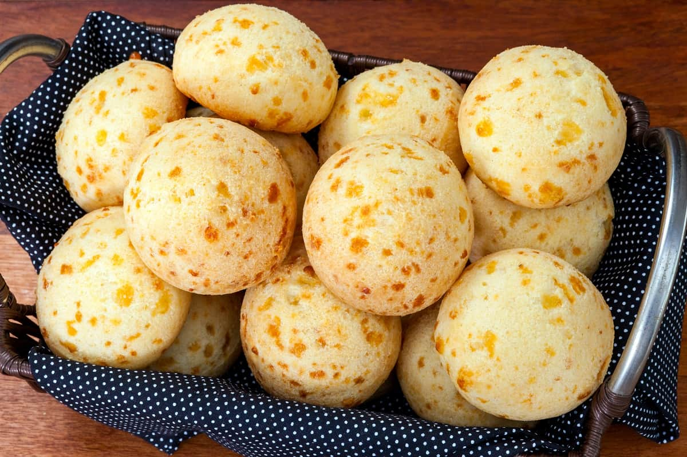
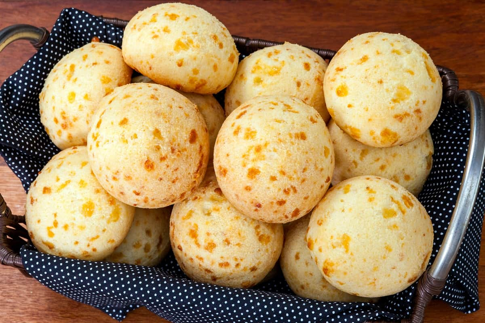

Ensalada Caprese
Esta ensalada fresca combina tomates jugosos, queso mozzarella y hojas de albahaca fresca. Se adereza con aceite de oliva extra virgen, vinagre balsámico, sal y pimienta. La Ensalada Caprese es un plato italiano clásico que destaca por la combinación de sabores suaves y aromáticos, perfecto como entrante refrescante en días calurosos.

 
